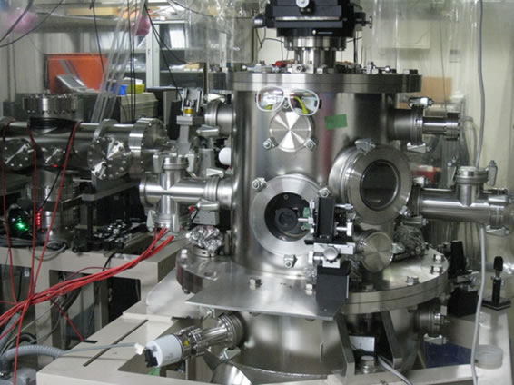
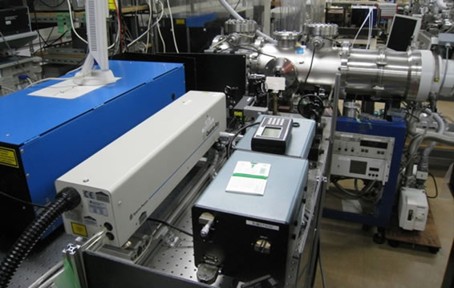

エレクトロスプレー・冷却イオントラップ分光装置

|
レーザー脱離超音速ジェット分光装置

レーザー脱離法によって気化した難揮発成分子を超音速ジェット冷却し、多重共鳴レーザー分光を行なう装置です。
手前、左右に紫外レーザー、中央が飛行時間型質量分析器です。 |

レーザー脱離法の心臓部分。
グラファイト円盤の側壁にマトリックス剤と混合したサンプルを塗布し、近赤外レーザー光による瞬間過熱を利用して サンプルを蒸発させます。 気化した分子はパルスバルブから噴射される希ガス原子との衝突によりジェット冷却され、下にあるスキマーを通って 超音速分子線になります。 |
ピコ秒時間分解分光装置

奥にピコ秒時間分解分光に用いるピコ秒レーザー、手前はそのピコ秒レーザーを分光装置へ導くために必要な光学素子。
多数の光学素子が必要となります。 見慣れないとごみの山のように見えるかもしれません。 |
|

ピコ秒時間分解分光で用いている飛行時間型質量分析装置。
上から超音速分子線、前後の窓からレーザー光が入射します。 イオンは左側へ飛んでゆきます。 |
波長可変中赤外分光装置

右側奥が周期分極反転非線形光学結晶を用いた擬似位相整合パラメトリック発振、増幅による２μｍ光発生装置。
左側が差周波発生法を用いた波長可変３μｍ光発生装置。 右側手前のＺｎＧｅＰ2結晶にこれらを導入し差周波発生により波長可変中赤外光を発生させます。 |
|

超音速ジェット中赤外レーザー分光に用いている四重極質量分析器 (奥) と紫外レーザー (手前)。
中赤外光は向こう側から入射します。 |